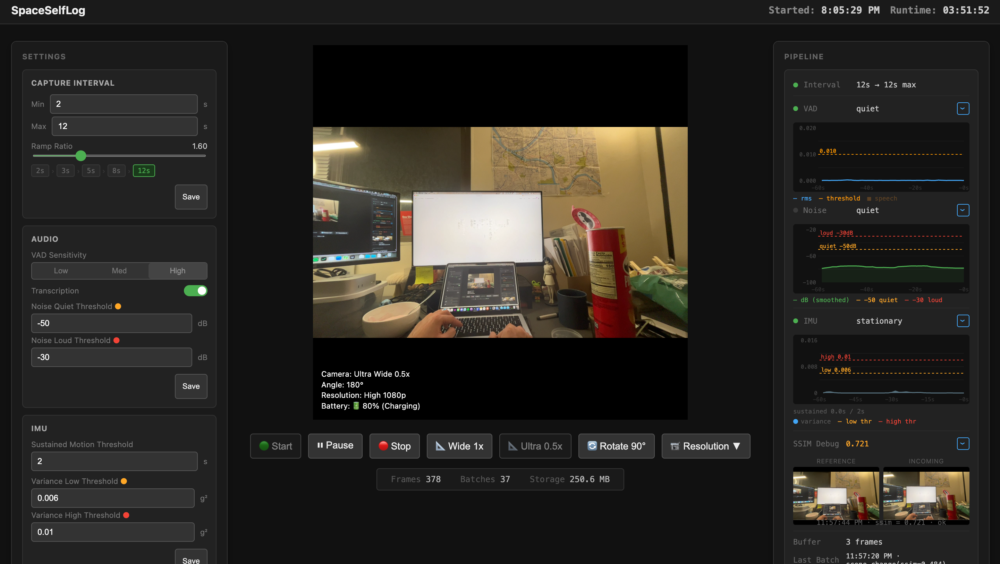

Settings - Parameters
Capture Interval
Min intervalminimum capture cadence (s)
Max intervalidle cadence ceiling (s)
Ramp ratiogeometric step between ramp levels
Audio
VAD sensitivityLow / Med / High
Transcriptionon-device speech-to-text toggle
Noise quiet thresholddB floor for "quiet" state
Noise loud thresholddB ceiling for "loud" state
IMU
Sustained motion thresholdseconds before motion trigger fires
Variance low thresholdg² below → stationary
Variance high thresholdg² above → active motion
Batch / Frame Selection
First batch windowinitial accumulation window (s)
Max windowhard timeout per batch (min)
SSIM boundary thresholdscene-cut sensitivity
Dedup SSIM thresholdsimilarity floor for greedy dedup
K densitytarget frames per minute
K min / K maxclamp range for dynamic K
Score thresholdguaranteed-keep floor score
Max output frameshard cap per batch
Outbox
Upload endpointTailscale URL for POST /ingest

Real-time Monitor
Sensor Pipeline
Current intervalactive capture cadence (s)
VAD statesilent / speech — live RMS chart
Noise levelsmoothed dB — quiet / loud chart
IMU statestationary / moving — variance chart + sustained bar
Frame Processing
SSIM debugreference vs. incoming frame pair + score
Buffer stateframes accumulated in current window
Last batchtrigger type, frame count, timestamp
Batch Output
Latest batch outputselected frames + trigger tags
Batch historyscrollable log of past batches
Layer 1 latest frameraw frame JSON with all sensor metadata
Device Status
Live camera streamcurrent viewfinder with angle & resolution
Batterydevice charge level
Frames capturedsession total
Batches sentsession total
Storage usedlocal frames directory size